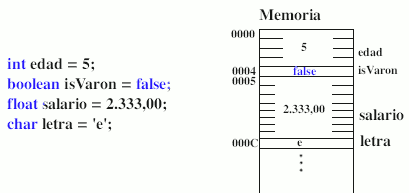
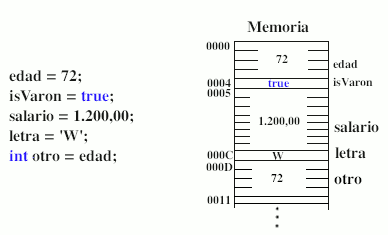
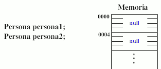

Tipo primitivo
Cuando se crea una variable de un tipo de de dato primitivo, java reserva un espacio en memoria y lo asocia al nombre de la variable. De forma que cada vez que aparezca el nombre de la variable en el programa el compilador lo sustiye por el valor que hay en la zona de memoria reservada. Mientras exista la variable estará asociada a la misma zona de memoria.
El valor almacenado puede cambiar, pero la zona de memoria asociada a la variable siempre es la misma. Además, si creamos una nueva variable y le asignamos el valor de otra ya existente, el valor se copia en la zona de memoria de la nueva variable, siendo así dos valores independientes. Es decir, si cambia la primera variable, la segunda permanece igual.
a)  b) 
Si no se especifica un valor en su declaración, las variable primitivas se inicializan a cero (salvo boolean y char, que se inicializan a false y '\0').
Tipo Estructurado o referencia
Cuando se crea una variable de un tipo de dato estructurado (tipo de referencia), Java gestiona la memoria de forma diferente. Una referencia es una variable que indica dónde está guardado un objeto en la memoria del ordenador. Al declarar una variable de referencia ( a) ) todavía no se encuentra “apuntando / referenciando” a ningún objeto en particular (salvo que se cree explícitamente un nuevo objeto en la declaración), y por eso se le asigna el valor null. Si se desea que esta referencia apunte a un nuevo objeto, ( b) ), es necesario crear el objeto utilizando el operador new. Este operador reserva en la memoria del ordenador espacio para ese objeto (atributos y métodos).
a)  b) 
También es posible igualar la referencia declarada a otra referencia a un objeto existente previamente. Así, las dos variables referenciarán al mismo objeto.

Ahora, si se modifica la variable objeto persona1, también cambiará la variable objeto persona2. Al copiar una variable objeto, lo que se copia es la zona de memoria a la que apunta, pero no el objeto en sí. En la imagen anterior podemos ver que el objeto "Carmen Lluch", 27, "Vinaròs" tiene dos referencias apuntandolo.
Nota: cuando un objeto deja de estar referenciado (no hay ninguna variable o atributo que apunte a él ), Java libera la memoria ocupada por dicho objeto. En la imagen anterior, el objeto "Luis Costa May", 27, "Vinaròs" ha sido eliminado de la memoria. Este proceso lo realiza el recolector de basura de Java y es automático.